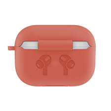

Apple airpods are wireless Bluetooth earbuds designed specifically to work with your iPhone and iPad. But since they're Bluetooth audio devices, you can also use them with almost any other computer or smartphone; you can even pair AirPods with an Apple TV. While Apple includes a simple pair of wired earbuds with every iOS device, AirPods offer a number of advantages that you might consider worth upgrading.
Since the very first iPhone was released in 2007, Apple has included a simple pair of wired earbuds in the box. If you've owned at least one iPhone or iPad, you've probably used them. Both earbuds are wired in a Y-connection to an audio connector that plugs into your phone. Starting with the iPhone 7, Apple discontinued the traditional headphone jack, and wired earbuds came with a Lightning port connector. All wired earbuds also have a media controller built into the wire, which you can use to play, pause, skip tracks, and adjust the volume. AirPods are different. Completely wireless devices, they have no wires at all and are not connected to one another. Instead, both earpieces have separate Bluetooth radios and pair with your phone or other devices via Bluetooth. Not only does this mean you don’t need to deal with a tangle of wires, but if you have an iPhone 7 or later, you can simultaneously use AirPods while charging your phone via the Lightning port.
Apple has released two versions of AirPods: The original AirPod (released in 2016) and the AirPod 2 (released in 2019). Visually, they look identical, but they have some important differences. The first generation AirPods use Apple’s original W1 wireless chip, while the AirPods 2 is built around the newer H1 wireless chipset, which Apple claims works about twice as fast. Both AirPods include an accelerometer, which is used to sense gestures, optical sensors to know if they're inserted in your ears, and microphones for phone calls and using Siri. The AirPods come with a charging case that has an integrated battery to extend the battery life of the earpieces when away from an electrical outlet. The original AirPods case was charged with a cable, while the AirPod 2 offers an optional wireless charging case at an additional cost. Both versions of the AirPods offer about the same overall battery life, which is more than 24 hours of listening time, provided you let the AirPods fully charge inside the charging case. The AirPods 2 offer slightly longer talk time on a single charge, roughly three hours rather than 2 hours
All AirPod models: You accept and end phone calls by double-tapping an earbud. Original AirPods: Double-tap either earbud to wake Siri. You control audio via Siri; ask Siri to perform tasks like "play," "pause," “lower volume,” “go back to the previous song,” or “skip song.” AirPods 2: double-tap an earbud to skip tracks. To wake Siri, say “Hey Siri.” You can also change AirPods settings so a double-tap performs other functions.